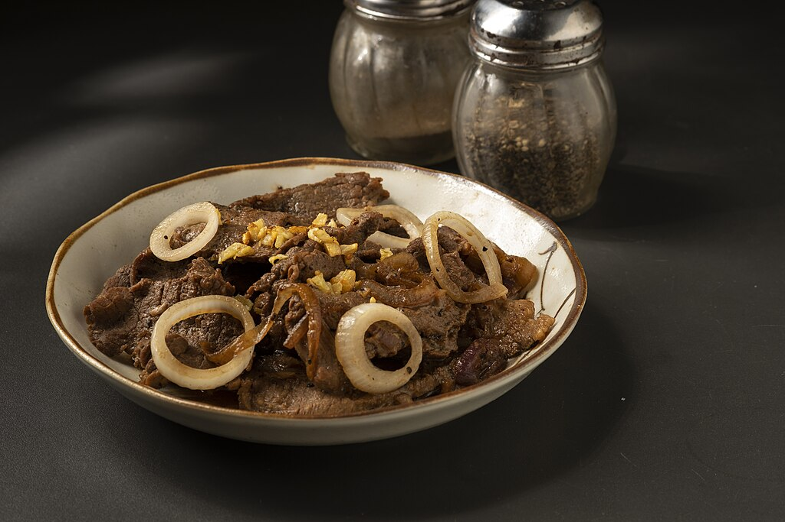

Bistek Recipe

Bistek, or Filipino Beef Steak, is a deliciously hearty
dish featuring thinly sliced beef marinated in soy sauce and calamansi
(or lemon) juice, then pan-fried and topped with caramelized onions.
This simple yet flavorful dish combines a blend of salty, sour, and
slightly sweet flavors, with tender beef slices and onions that add
depth and texture. Best enjoyed with rice, Bistek is a Filipino favorite
known for its rich taste and straightforward preparation.
Serves: 4 people
Prep Time: 15 minutes
Cook Time: 20 minutes
Ingredients:
-
1 lb beef sirloin or 1 lb beef tenderloin, sliced 1/4 inch thick
- 8 tablespoons of kalamansi juice
- ½ cup soy sauce
- ½ tablespoon of freshly-ground pepper
- 3 to 4 garlic gloves (minced)
- 1 and ½ large (white) onions, cut into rings
- 1 small red onions
-
2 tablespoons of neutral oil (whatever you and your family prefers)
- 1 to 2 cups of water (depends on your preference of taste)
Instructions:
-
Marinate the Beef
In a large bowl, combine the beef slices, kalamansi juice, soy sauce,
freshly ground pepper, and half of the minced garlic. Mix well to coat
the beef evenly, then let it marinate for at least 30 minutes to
absorb the flavors.
-
Sauté the Red Onions
Slice the red onion thinly and set aside the white onions, which will
be used later. In a large skillet, heat 2 tablespoons of neutral oil
over medium heat. Add the sliced red onions, cooking until soft and
slightly caramelized (about 3-4 minutes). Remove the onions from the
skillet and set them aside.
-
Sauté the Red Onions
Slice the red onion thinly and set aside the white onions, which will
be used later. In a large skillet, heat 2 tablespoons of neutral oil
over medium heat. Add the sliced red onions, cooking until soft and
slightly caramelized (about 3-4 minutes). Remove the onions from the
skillet and set them aside.
-
Brown the Beef
In the same skillet, add the marinated beef slices in a single layer.
Brown each side for about 1-2 minutes until the beef develops a nice
color. Work in batches if needed to avoid overcrowding.
-
Add the Sauce
Pour the remaining marinade into the skillet with the beef. Add 1 to 2
cups of water based on your preferred sauce consistency and strength.
Bring to a boil, then reduce the heat and let it simmer for 10-15
minutes, or until the beef is tender.
-
Add White Onions and Simmer
Slice the white onions into rings, then add them to the skillet in the
last 2-3 minutes of cooking. This allows the white onions to soften
slightly without losing their texture or bite.
-
Serve
Transfer the beef to a serving plate, topping with the sauce, red
onions, and softened white onion rings. Serve with steamed rice and
enjoy!